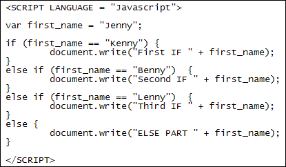

Javascript IF ... ELSE
This lessons continues from the previous one.
You can also add an else part to your IF statements. This is for when you want to say what should happen if your IF Statement evaluates to false. As an example, change your code to this:
var first_name = "Benny";
if ( first_name == "Kenny" ) {
document.write("First Name is " + first_name);
}
else {
document.write("First Name is " + first_name);
}
The first line of the code has changed "Kenny" into "Benny". Between the curly brackets we now have:
document.write("First Name is " + first_name);
Look at the else part we've added, though:
else {
document.write("First Name is " + first_name);
}
If you add an else part, it needs its own pair of curly brackets. Miss one out and your code won't work. Between the curly brackets is where you type your code.
Save your changes and run your code. You should see this written to your browser:
First Name is Benny
So the first part of the IF Statement checks the condition between the round
brackets. If it's true, the code for its pair of curly brackets will get executed. c
If it's false then Javascript will jump to the else part. The code for the curly
brackets of else will then get executed.
IF … ELSE IF
You can add another condition to test. This is done with ELSE IF. The syntax is this:
if ( first_condition_to_test ) {
}
else if ( second_condition_to_test ) {
}
Notice that else if is two words. If you type it as one word (elseif) then your code won't work. So it's just another IF statement with the word else in front of it.
You can add as many else … if parts as you need:
if ( first_condition_to_test ) {
}
else if ( second_condition_to_test ) {
}
else if ( third_condition_to_test ) {
}
Each condition you add will be evaluate to true or false. If Javascript finds a true value then it will execute any code between the curly brackets that go with it. After that, it will exit the IF statements altogether. So if the second else if above is true then its code gets executed. The third else if will be skipped and your programme will continue on its way.
You can also add an else right at the end, to catch anything you haven't checked for:
if ( first_condition_to_test ) {
}
else if ( second_condition_to_test ) {
}
else if ( third_condition_to_test ) {
}
else {
}
And here's an example of else if for you to try out:

The first line now assigns a value of "Jenny" to the first_name variable. You should be able to guess what gets executed.
Exercise
Change Jenny to "Kenny", then "Benny", then "Lenny"
just to check what gets printed out. Now change "Benny" to "benny"
(lowercase for the first letter). What do you think will print out? Is Javascript
case sensitive here, or not case sensitive?
Nested If Statements
You can nest one or more IF statements. Supposing you wanted to test a variable to see what value it holds. But you also want to do further tests on it. You can do this kind of thing:
if ( x > 1) {
if ( x == 2) {
}
else if (x == 3 ) {
}
}
In the code above, we're first testing if the variable x is greater than 1. But we want to narrow it down even further. If it is indeed greater than 1 then a nested if … else statement gets executed. This further scrutinises the x variable.
To get the best out of the IF Statements, you'll need the use of something called comparison operators. We'll do that in the next lesson.